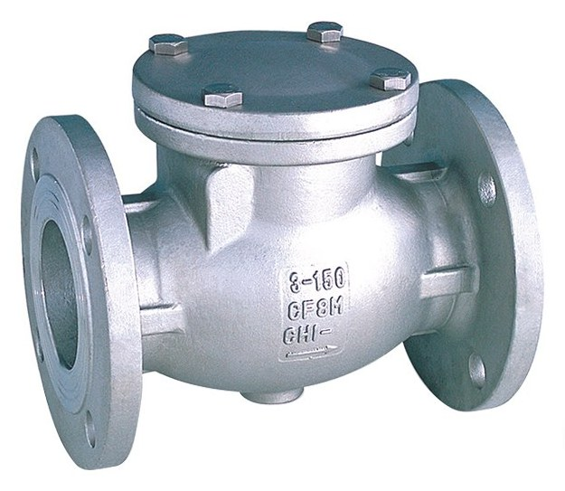
Swing Check Valve WCB F/T
MaterialCarbon steel
Sizes1½" – 12"
- CL150
- CL300
Valves · 13 products
Non-return protection — swing, spring, piston, wafer disk and dual-disk designs. Ask Fakhri Tools for a quote on WhatsApp, by phone or at our trade counter in Al Quoz Industrial Area 3.

MaterialCarbon steel
Sizes1½" – 12"
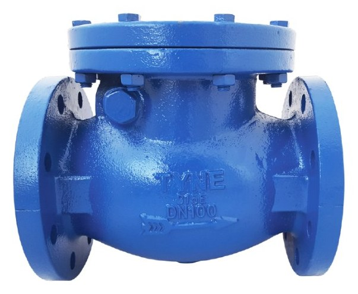
MaterialCast iron
Sizes1½" – 8"
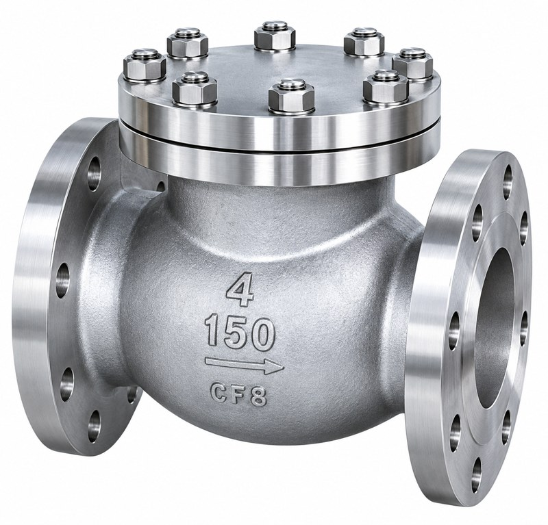
MaterialStainless Steel CF8M (316)
Sizes½" – 12"

MaterialStainless Steel CF8M (316)
Sizes½" – 4"
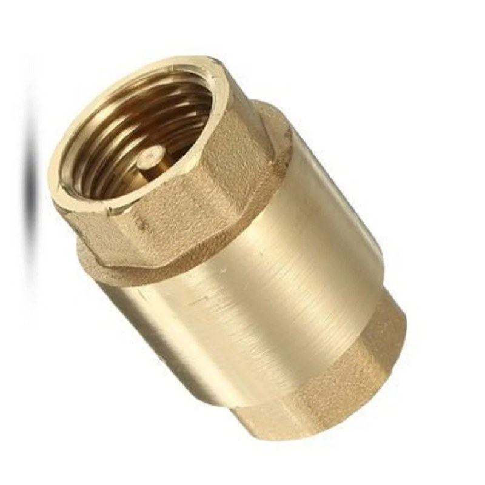
MaterialBrass
Sizes½" – 4"
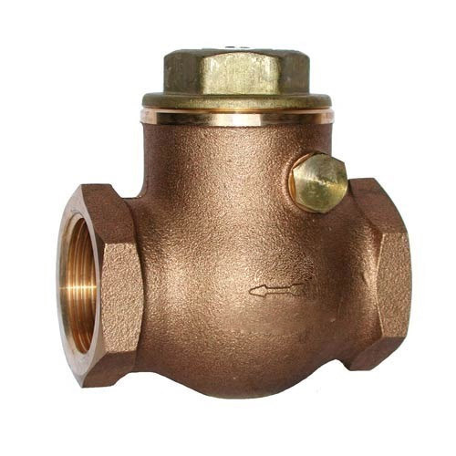
MaterialBrass, Bronze
Sizes½" – 4"
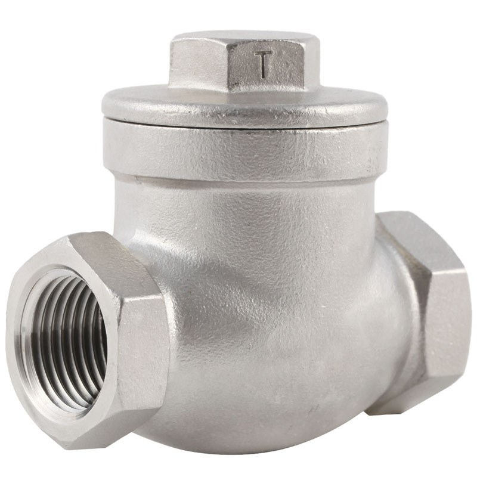
MaterialStainless Steel CF8M (316)
Sizes½" – 4"
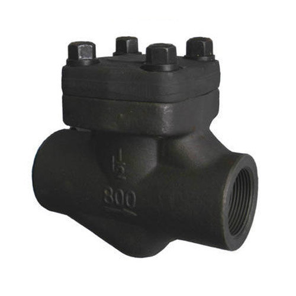
MaterialForged Steel ASTM A105N
Sizes½" – 2"
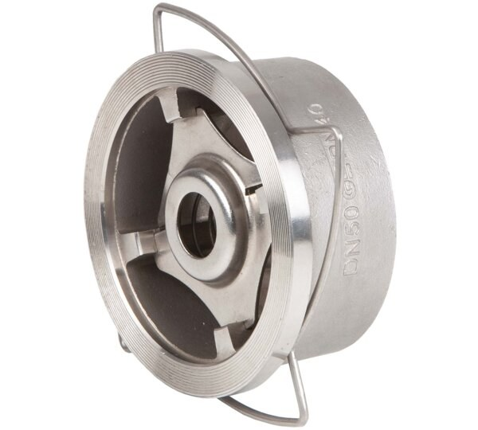
MaterialStainless Steel CF8M (316)
Sizes½" – 8"
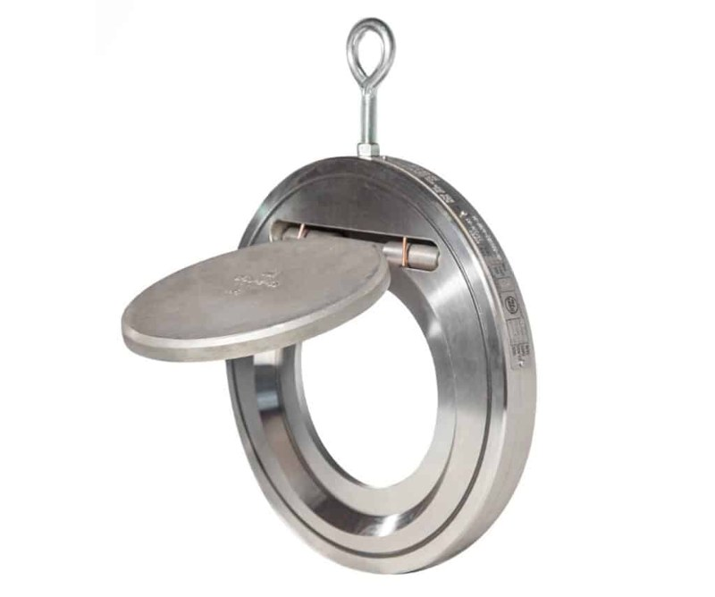
MaterialStainless Steel CF8M (316)
Sizes1½" – 8"
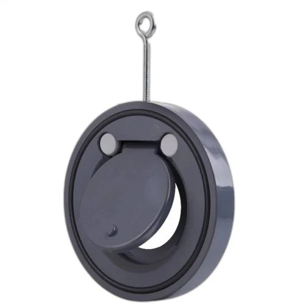
MaterialCast iron
Sizes1½" – 8"
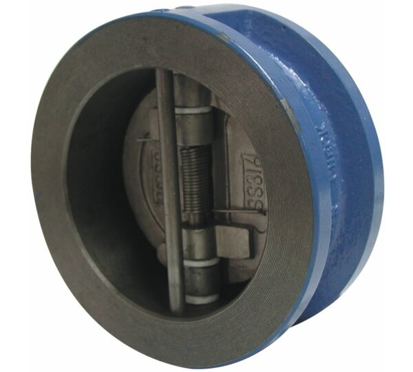
MaterialCast iron
Sizes2" – 12"
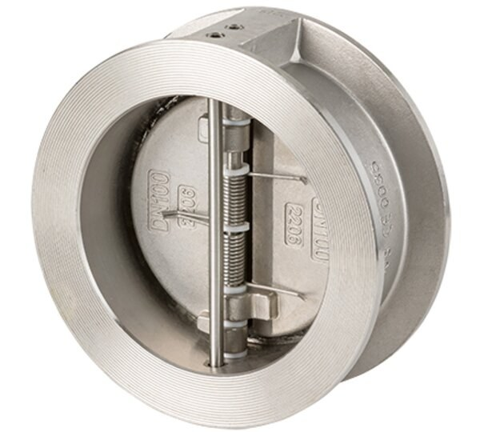
MaterialStainless Steel CF8M (316)
Sizes2" – 12"
Our check valves (non-return valves) cover swing, spring, piston, wafer disk and dual-disk designs. Flanged: C.S WCB swing in CL150 and CL300 from 1½" to 12", SS CF8M in CL150 and CL300 from ½" to 12", and C.I swing in PN16 from 1½" to 8". Wafer disk type: SS CF8M in PN10 and PN16 from 1½" to 8", SS CF8M in PN40 (PN25 above DN100) from ½" to 8", and C.I in PN10 and PN16 from 1½" to 8". Wafer dual-disk type: C.I with DI and SS disc in PN16, and SS CF8M in PN25, both from 2" to 12".
Screwed, from ½" to 4": brass and bronze swing and brass vertical spring in NPT or BSPT, SS CF8M swing in PN16 NPT, and SS CF8M vertical at PN63 and 1000 WOG. A forged A105N piston check valve at 800 WOG comes in NPT or SW from ½" to 2".
Swing check valves suit horizontal lines with steady flow. Spring and vertical check valves close faster and can sit in vertical lines with upward flow. Wafer and dual-disk types are short and light, so they fit between flanges where space is tight, such as after a pump.
Send on WhatsApp the size, type, class or PN, end connection, material and quantity.
Yes. Both names mean a valve that lets flow pass one way and stops it coming back.
Yes. We list a brass vertical spring check valve in NPT or BSPT and an SS CF8M vertical check valve at PN63 and 1000 WOG, both from ½" to 4".
Dual-disk and spring types close quickly and are common on pump discharge. Send the line size and flange class on WhatsApp and we will suggest a match from our list.
Send a photo of it, or its nameplate, on WhatsApp and we will tell you if we have it.